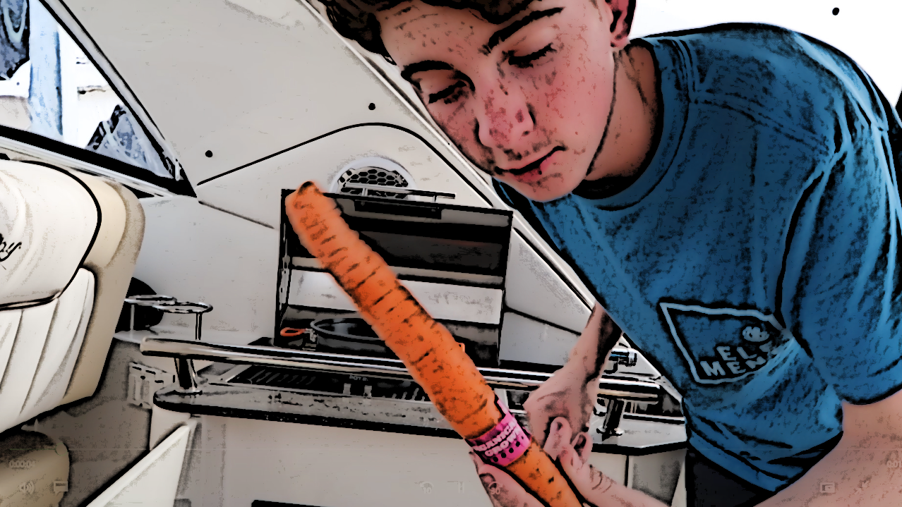
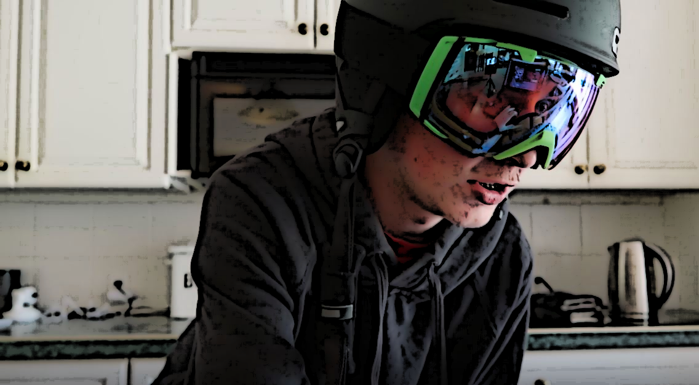

Banjo, a Recipe
Slightly timid but marginally competent, this is the perfect late night nibble.

Serves: a few close, special people for a few days before becoming tired.
Prep Time: next to nothing.
Difficulty: not initially tricky, becomes slightly trickier, until it's no work at all.
Not quite vegan
Ingredients
- 300 grams OCP
- 4 kg Introversion
- 3 1/2 kg Nervous
- 1 kg Feigned confidence
- 2 quarts Logical
- 2 quarts Math
- 5 kg Cereal lover
- 3 kg Conscientious
- 3 kg Friendly
- 1 kg pensive, but most often 0000.013 grams serious
- 3 kg Accepting
- 14 grams Humour
- 4 grams Cheeky
- And pinches of competence
If all goes to plan,
Banjo should look roughly like this
Method
- Relax. If any errors are made, Banjo is slightly moronic and unassuming, likely to assume he's the cause of error.
- Preheat the surrounding room to a sweet 21 degrees Celsius during day times, and a distressingly low 16 degrees during night times while preparing Banjo.
- Preheat the oven to 200 degrees Celsius or 392 degrees Fahrenheit.
- Cuts the nervous nature into small florets, peeling and trimming the stalks.
- Place these florets into the oven, seasoning with the pinch of competence. Let them cook for 10-12 minutes.
- In a bowl, mix together the acceptance, the friendly, and the feigned confidence and let them chill in the fridge.
- Meanwhile, stir together the quarts of logic and math to the pensivity and playful lack of seriousness in a large bowl. This is to be added to the friendly mix later.
- In the meantime, the subtle introversion, the occasional obsessive compulsive personality tendencies (OCP), with the slight cheekiness and humour are added to the nervous florets already in the oven.
- This assembly will remain in the oven for a further 4 minutes or until all components are golden caucasian.
- Finally mix together the three mixtures (the friendly mixture, the logic and pensivity mixture, and the oven mixture) in a larger bowl.
- Plop the product onto a plate, and garnish with cereal lover. Bon appetit!.